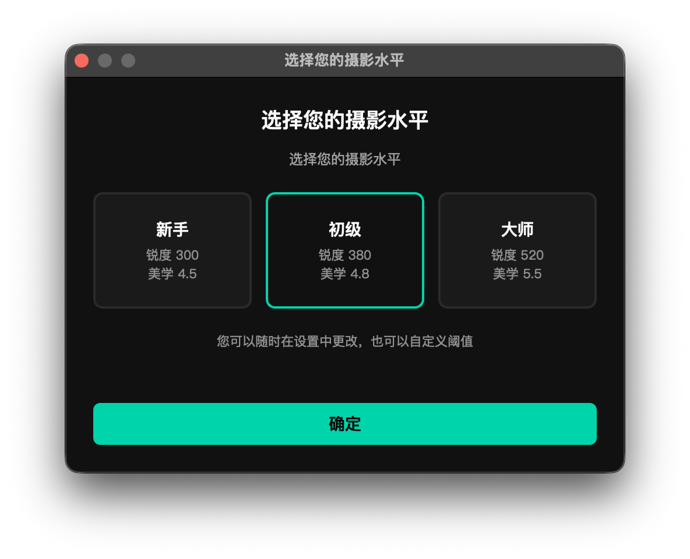

开始处理前，理解每个参数的含义——合理配置能让选片结果更贴近你的实际需求。 Understand what each parameter does before you start — the right configuration makes results match your expectations.

优选参数面板 — 飞鸟 / 连拍 / 识鸟开关（右上角）与锐度 / 美学滑块（中部）
参数区顶部的「摄影水平」标签显示当前档位，点击后弹出水平选择框，提供三档预设加一档自选： The "Photography Level" label at the top of the parameters area shows the active preset. Click it to open the selection dialog — three presets plus a custom mode:
| 档位Level | 锐度阈值Sharpness | 美学阈值Aesthetics | 适合人群Best for |
|---|---|---|---|
| 新手 Beginner | 300 | 4.5 | 宽松标准，保留更多照片 Relaxed — keeps more photos |
| 初级推荐 IntermediateRec. | 380 | 4.8 | 平衡标准，推荐大多数用户从这里开始 Balanced — a good starting point for most |
| 大师 Master | 520 | 5.5 | 严格标准，只留清晰度和构图都出色的精品 Strict — only truly sharp, well-composed shots pass |
| 自选 Custom | 自定义Custom | 自定义Custom | 手动拖动滑块后自动切换为此模式 Activated automatically when you drag either slider |
选择预设后，锐度和美学两条滑块会自动跳到对应数值。反过来，手动拖动任意滑块，当前档位会自动切换为「自选」，两者始终联动。 Selecting a preset snaps both sliders to the corresponding values. Conversely, dragging either slider manually switches the level to Custom — the two are always in sync.
不确定选哪个时，先选「初级」跑一遍，根据实际结果再决定是调松还是调紧。 When in doubt, start with Intermediate, run a cull, then decide whether to loosen or tighten based on what comes out.

锐度阈值衡量的是鸟头 / 鸟眼区域的清晰度，而非整张照片的全局锐度。处理时先定位鸟体，裁出头部区域，再对该区域单独计算清晰度评分——数字越大越清晰。 The Sharpness threshold measures sharpness in the bird's head and eye area, not global image sharpness. The bird is located first, the head crop is extracted, and a sharpness score is calculated for that region — higher is sharper.
怎么选数值： How to choose a value:
好片被漏掉？降低锐度阈值。废片太多？提高锐度阈值。锐度对留片率影响最大，优先调这个。 Good shots missing? Lower the threshold. Too many rejects getting through? Raise it. Sharpness has the biggest impact on pass rate — adjust this first.
美学阈值对通过锐度检测的照片进行构图、曝光、色彩综合评分，只有分数高于阈值的照片才有资格进入 2 星或 3 星。 The Aesthetics threshold scores photos that passed the sharpness check on composition, exposure, and color. Only photos scoring above the threshold can reach 2 or 3 stars.
怎么选数值： How to choose a value:
美学阈值主要影响照片在 1 星和 2–3 星之间的比例，对总留片数影响比锐度阈值小。如果 2–3 星偏少，先试着适当降低这个值。 The aesthetics threshold mainly affects the split between 1-star and 2–3-star photos, not the total pass rate. If you're getting too few 2–3-star photos, try lowering this value first.
「飞鸟」开关启用飞版专用检测，使用慧眼飞鸟模型判断照片中的鸟是否处于飞行状态。 The BIF toggle enables flight detection, using a dedicated model to determine whether the bird in each photo is in flight.
默认关闭建议开启 — 模型体积小、推理快，对整体处理速度几乎没有影响。 Off by defaultRecommended ON — the model is lightweight and fast; overall processing speed is barely affected.
| 检测到飞行中的鸟 Bird detected as in flight |
照片打上飞版标记，整理后归入 _bif（Bird in Flight）子目录
Photo is flagged and moved to the _bif (Bird in Flight) subdirectory during organization
|
| 未检测到飞行状态 Bird not in flight | 按常规流程处理，进入普通星级目录 Processed normally and placed in the standard star-rating directories |
建议开启的场景： When to enable:
「连拍」开关通过读取照片 EXIF 中的原始拍摄时间，识别连续拍摄的同组照片，并在整理阶段自动合并，每组只保留最高星级的那张作代表。 The Burst toggle reads the original capture timestamp from each photo's EXIF data to detect groups of shots taken in rapid succession. During organization, each burst group keeps only its top-rated photo in the main directory.
默认关闭 — 连拍判定条件（可在高级设置中调整）： Off by default — burst detection criteria (adjustable in Advanced Settings):
| 符合连拍条件 Burst group detected |
每组只保留最高星级的那张，其余移入同名 burst_xxx 子目录
Only the top-rated shot stays in the main folder; the rest move to a burst_xxx subdirectory
|
| 整组全是 0–1 星 Entire group rated 0–1 star | 不合并，原样保留在各自目录 No merging — each photo stays where it was placed |
开启连拍检测后，低星级的连拍照片会被归并到高星级目录下的 burst_xxx 子目录，可能造成精选区混入低质量照片的困扰。如果你不需要完整的连拍序列做后续制作（如视频输出、GIF），不建议开启。
When burst detection is on, lower-rated shots from a burst group are moved into a burst_xxx subfolder inside the highest-star directory. This can introduce low-quality photos into your curated area. Unless you need the full burst sequence for a downstream purpose (video, GIF, etc.), it is best to leave this off.
不开连拍，锐度和美学评分已经会从同一组连拍里自动给最好的那张最高星级——你不会漏掉精品。 Without burst detection, the sharpness and aesthetics scores will naturally rank the best shot in any burst highest — you won't miss the keeper.
「识鸟」开关（参数区最右侧）在处理时同步识别每张照片的鸟种，识别结果写入 EXIF 元数据，并在结果浏览器的识鸟面板中展示。 The Bird ID toggle (rightmost in the parameters area) identifies the bird species in each photo during culling. Results are written to EXIF metadata and displayed in the BirdID panel in the Result Browser.
默认关闭建议开启 Off by defaultRecommended ON
识鸟推理只对 2 星及以上的照片执行，0 星和 1 星照片不参与识别。这不是因为识别不了，而是出于效率考虑——低质量照片本就不在你的精选范围内，不值得花时间去识别。因此，开启识鸟对总处理时间的影响远小于你的预期。 Bird ID inference only runs on photos rated 2 stars or above. Zero- and 1-star photos are deliberately skipped — not because they can't be identified, but because they fall outside your selection and aren't worth the processing time. As a result, enabling Bird ID has far less impact on total processing time than you might expect.
识鸟功能的完整使用说明（识别面板、国家地区设置、置信度、鸟名格式等）见第 08 章。 For full Bird ID documentation — the ID panel, region settings, confidence, naming formats, and more — see Chapter 08.